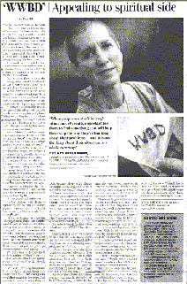

| Revue de presse |
Un moyen simple de se rappeler sa foi passe du christianisme au bouddhisme. |
|  |
(chroniques, page 1d), 1er octobre 1999. |
C'est un signe de la croissante diversité religieuse du pays que de voir des membres d'une autre confession porter désormais leur spiritualité sur les manches.
En ce même mois, Ulysses Press, un éditeur californien, va commencer à commercialiser des livres et bracelets avec les initiales «WWBD» pour «What Would Bouddha Do ? » (Que ferait Bouddha ?)
" Je pense que c'est une bonne idée " dit le révérend Sukha Haju Sunim, prêtre permanent au temple Bouddhique zen Ann Arbor : " Dans le bouddhisme vous savez, on met vraiment l'accent sur le fait d'être attentif à ce que nous faisons à chaque instant de notre vie. "
D'aussi simples rappels d'une personne de foi peuvent devenir vitaux dans des situations critiques dit le révérend Geri Larkin, autre prêtre bouddhiste de Ann Arbor qui a écrit deux livres sur le bouddhisme.
L'année dernière, Larkin a eu l'idée du «WWBD», indépendant d'Ulysses. Elle n'a pas écrit un livre dessus ou fait des bracelets. À la place, elle a brodé les quatre lettres sur des mouchoirs en coton comme cadeaux de fin d'année pour des amis.
Récemment, elle a emporté un mouchoir «WWBD» dans un pèlerinage très éprouvant avec son amie Haju jusqu'à des monastères isolés dans les montagnes en Corée du sud : " C'était un voyage terriblement difficile et je sortais tout le temps ce mouchoir comme un merveilleux rappel de ne pas s'inquiéter de ce qui m'attendait. " a dit Larkin.
Bruce Willett, directeur du marketing chez Ulysses à Berkely en Californie, dit qu'il espère que le livre, le bracelet (15 $) de sa maison attirera des gens venant de nombreux horizons religieux. Chaque livre contient un coupon à retourner chez Ulysses pour recevoir le bracelet.
" Est-ce qu'il est nécessaire d'être bouddhiste pour lire le livre ou porter le bracelet ? Non " dit Willett. " C'est la clé de la diversité religieuse aujourd'hui. Les Américains se sentent libres de rechercher la sagesse spirituelles dans beaucoup de traditions différentes. Ils se servent de différentes pratiques spirituelles qu'ils trouvent avoir du sens. Et la tradition bouddhique est pleine de bons conseils pour la vie quotidienne. "
Le livre, qui sera présenté dans les librairies et plusieurs clubs de livres ce mois-ci offre 105 réponses à des questions courantes «WWBD».
Par exemple, le matin : " Que ferait Bouddha si le café est devenu un drogue ? " Il se mettrait au thé. C'est plus relaxant.
En voiture pour le travail que ferait-Il contre l'énervement au volant ? Il conduirait loin de la colère et ferait attention à ne pas contribuer au problème en conduisant de façon trop agressive.
Cependant, on peut se demander si ce conseil marcherait vraiment bien sur un plan non spirituel. Que ferait Bouddha si son patron se plaignait qu'il est en retard ? Eh bien, il pourrait dire : " L'heure c'est maintenant. Maintenant est à la fois le quoi et le quand. Dans ce sens, nous sommes toujours à l'heure ".
Franz Metcalf, l'universitaire bouddhiste habitant Los Angeles qui a écrit le livre, sourit aussi par rapport à cette optique : " Il y a une certaine touche d'humour là-dedans, c'est vrai. "
Mais il défend ce principe de base. Les employés bouddhistes ont la responsabilité de fournir à leur employeur un bon travail quotidien, mais en dernier ressort, notre existence doit-elle être commandée par la poursuite exacte de la pendule ?
" Dans notre vie, il y a à la fois le niveau ultime de vérité absolue et ce niveau pratique auquel nous vivons. Je pense que c'est agréable si les gens arrivent à équilibrer ces deux visions différentes " dit-il.
Toutefois, atteindre cet équilibre est très difficile, dit Lazkin, surtout quand une personne se sent dépassée par la vie.
En août dernier, Larkin a quitté Ann Arbor avec Haju pour passer un mois à faire le tour de 30 monastères en Corée du Sud avec deux moines bouddhistes
" C'était si difficile " dit Larkin, " Voici deux américaines d'âges moyens qui n'avaient aucune idée sur les protocoles des nombreux monastères. Nous étions les premiers occidentaux que certains moines avaient déjà rencontrés. Nous étions les premières femmes à entrer dans certains de ces monastères. Cela signifie qu'il y a beaucoup de choses à propos du protocole que nous avons complètement ratées. "
L'idée était d'approfondir leur compréhension du bouddhisme mais Larkin dit qu'elle s'est souvent trouvée avoir le souci de simplement rester en vie.
" Nous grimpions des montagnes comme les Alpes avec nos robes bouddhiques. Nos sacs à dos se prenaient dans les arbres et nous devions faire attention à chaque pas que nous posions parce qu'il y avait des endroits où nous pouvions facilement glisser en dehors du chemin et nous tuer en tombant " dit-elle.
Ensuite il a plu et pas une simple douche, mais un typhon qui a duré des jours : " Il faisait déjà assez chaud, les pluies torrentielles et ces grands vents sont arrivés pour tout arranger. C'était vraiment facile de se perdre, de s'inquiéter comme j'avais chaud et étais mouillée et épuisée, de me demander si ma maison me manquait. "
Pour se calmer, Larkin sortait souvent son mouchoir «WWBD».
Concentrer tous ses sens sur chacun des pas qu'elle faisait sur ces chemins étroits l'a aidée à se calmer. Assez vite, elle grimpait avec plus de facilité et de confiance.
" Quand des gens sont pris dans des situations difficiles, c'est vraiment important pour eux de trouver quelque chose qui va les aider à abandonner la manière dont ils pensent à leur problèmes et de commencer à réfléchir à leur situation d'une manière nouvelle.
Une idée similaire, dans une perspective chrétienne trottait dans la tête de Janie Tinklenberg en 1989. À l'époque, elle était jeune pasteur de l'Èglise Réformée du Calvaire en Hollande et cherchait un moyen de rappeler aux jeunes chrétiens leur foi sur une base quotidienne.
" Je voulais donner quelque chose aux jeunes qui leur rappellerait qu'ils vivaient leur vie avec un engagement envers quelque chose de spécial. " dit Tinklenberg qui travaille aujourd'hui pour une église près de Columbus dans l'Ohio. En 1989, un responsable de la publicité dans la congrégation de Hollande l'a mise en contact avec un fabricant de bracelets. Les jeunes ont adoré l'idée et rapidement les bracelets s'envolaient des portes de l'Église.
Tinklenberg ne s'attendait pas à ce que son idée simple explose en un engouement d'une envergure chrétienne nationale et regrette presque aujourd'hui que les bracelets " WWJD " soient devenus à la mode.
" Je pense que cela délivre le message. Des gens portaient ces bracelets sans même comprendre la signification. "
Elle ne voit pas d'inconvénient à ce que les bouddhistes développent leur propre version. En ce moment, la mode chrétienne retombe dit-elle.
" Cela va si cette mode chrétienne se démode, je veux que cela se démode pour que cela retourne d'où s'est parti – retourner à ce que les gens qui les portent sachent ce que ce petit bracelet de nylon signifie vraiment."